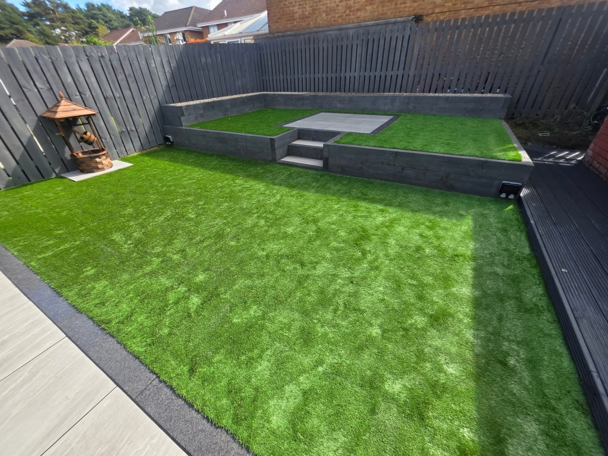
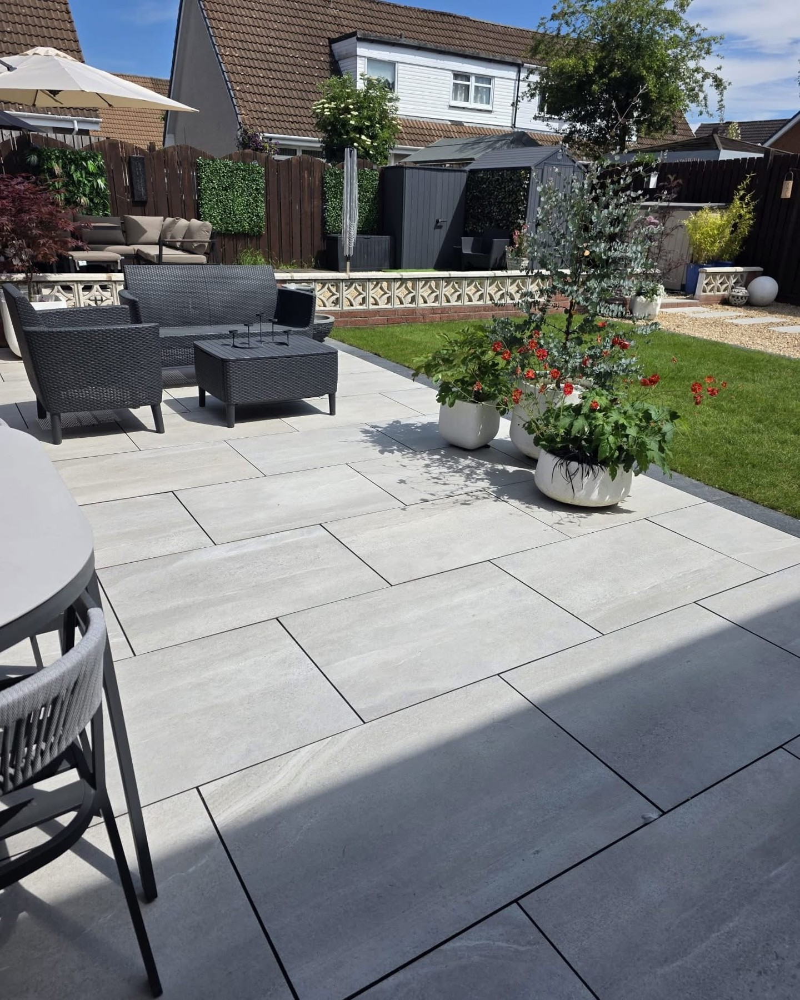
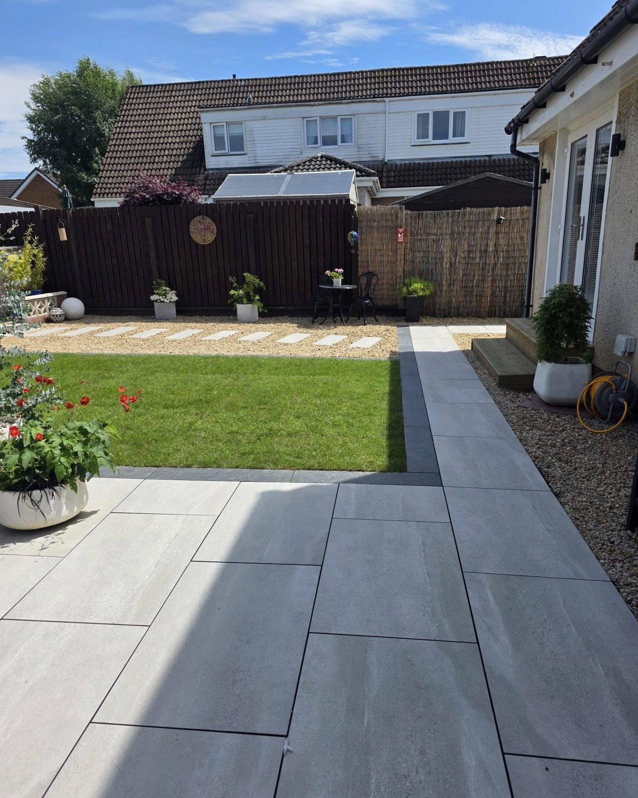
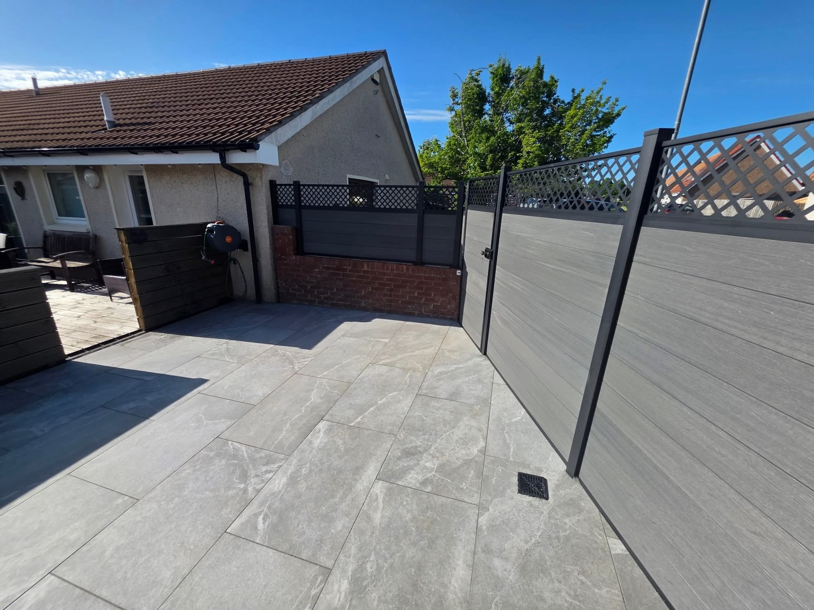
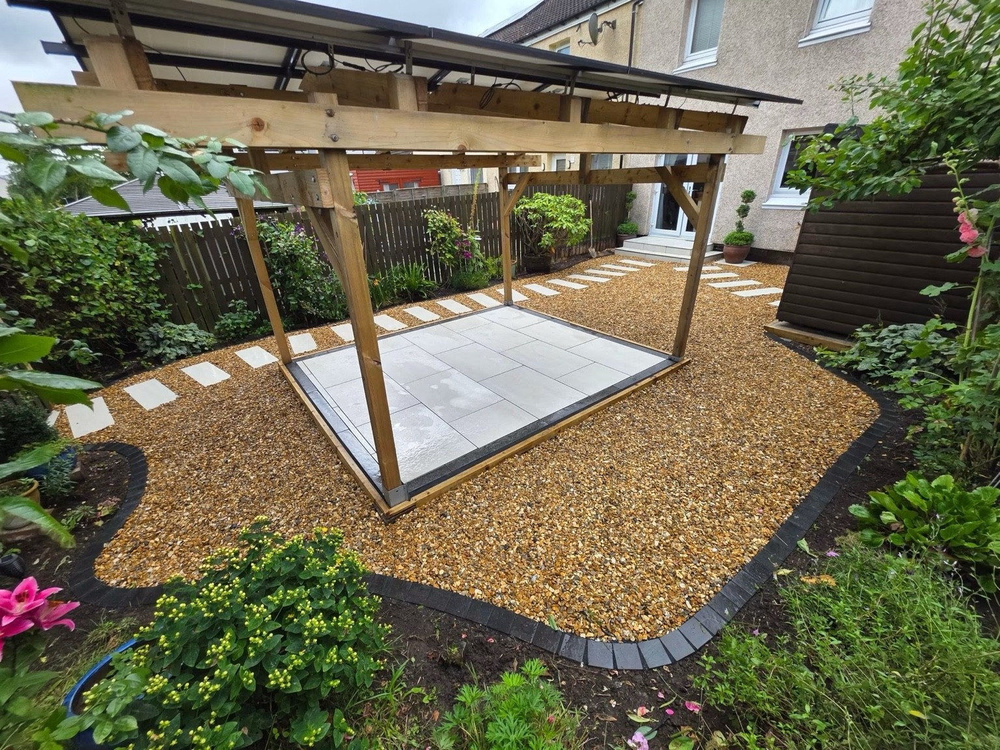
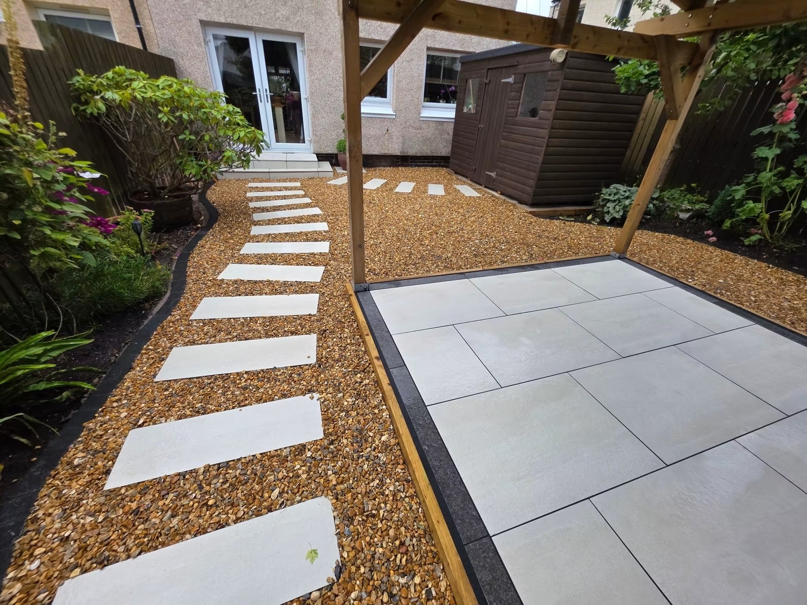
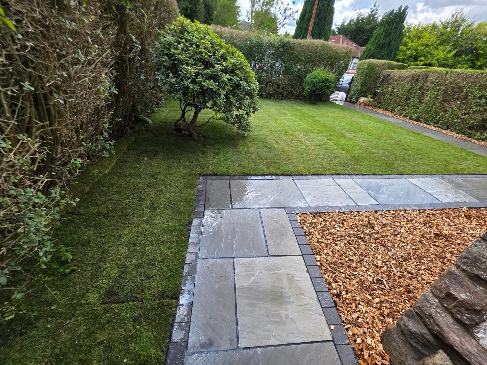
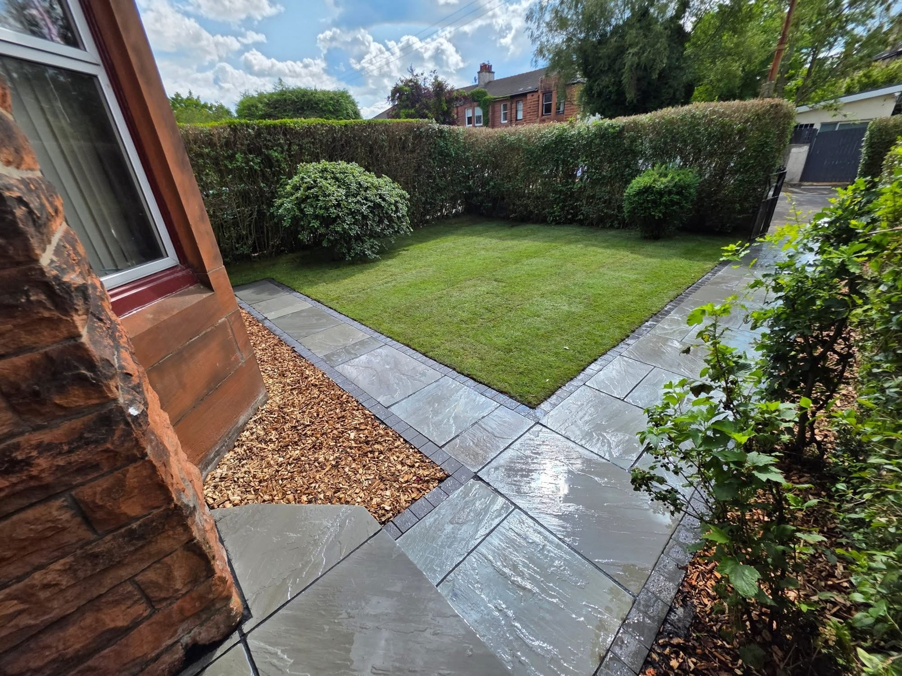
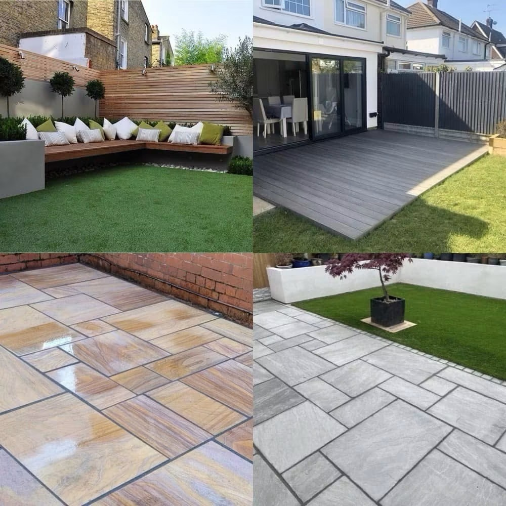

Garden TransformationsComplete garden renovations and practical layouts

EDINBURGH · EAST KILBRIDE · SHOTTS
Love your garden. Make it your own.
Beautiful paving, fresh lawn areas and thoughtful garden layouts. M.A.C Construct and Landscaping helps you make more of the space outside your home.
Bespoke DesignLandscapingPatios & PavingGarden Transformations
Patios & PavingPaved patios, paths and outdoor seating areas
Fencing & Garden StructuresGarden boundaries, pergolas and outdoor features
Turf & Artificial GrassLawn areas, planters and finishing details
YOUR GARDEN, YOUR WAY
Built around your home. Finished with the details in mind.
A patio for summer evenings, a fresh lawn or a complete change of layout — bring your garden plans together with M.A.C Construct and Landscaping. From paving and paths to fencing and finishing details, create an outdoor space that suits your home.
Request a quote →

PATIOS & GARDEN LAYOUTS
Step outside.
Stay a little longer.
Make space to sit, entertain and enjoy your garden. Paving, lawn areas, steps and raised features give each part of the garden a purpose, with clean edges that bring the whole layout together.
Discuss your project →
RECENT WORK
Outdoor spaces.
Details that make the difference.
Explore garden projects featuring patios, lawns, paths, fencing and pergolas.




PERGOLAS & GARDEN PATHS
From the wider layout to the finishing touch.
A timber pergola frames the seating area, while stepping stones and a curved gravel border connect it to the house. Two views of the same garden show how the features work together.
Discuss your paving →
M.A.C CONSTRUCT AND LANDSCAPING
We want you to
love your garden.
M.A.C Construct and Landscaping works across Edinburgh, East Kilbride and Shotts. The portfolio brings together paved patios, lawns, fencing, paths and garden structures — from individual improvements to complete changes of layout.
01
A joined-up garden
Bring seating areas, lawn space and boundaries together in one layout.
02
Paving, fencing & lawns
Choose practical surfaces and garden structures to suit the way you use your space.
03
From a single job to a full renovation
Discuss a new patio, replacement fencing, lawn area or a complete garden change.
REQUEST A QUOTE
Tell us about
your garden plans.
Complete the form and it will open WhatsApp with your project details ready to send. This is a quote request, not a confirmed booking.
M.A.C CONSTRUCT AND LANDSCAPING
Ready to transform your garden?
Edinburgh · East Kilbride · Shotts